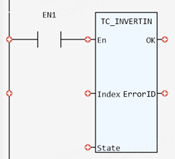

System Function.
Allows the input channels to be individually inverted in software.
|
Index: INT; |
Input channel |
|
State: TC_InvertIN_State; |
tcOFF: the input is not inverted |
|
ErrorID: UINT; |
Returned error number |
This function allows the input channels to be individually inverted in software. When the input parameters are incorrect, the ErrorID will change to 19.
(UINT):=TC_INVERTIN(Index:= (INT), State:= (TC_InvertIN_State));

Not available.